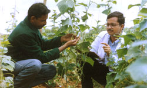

| ITAP's
commitment to total quality starts right from the choice
of seeds, which are procured only from premium seed producers
in the international market. Stringent quality control
measures are adopted during procurement and disbursement
of seeds to the farmers. The proposed farmland is first
tested for suitable soil conditions and only those that
prove satisfactory are chosen for the cultivation purpose
in addition to various pre-qualification processes that
a farmer / farmland has to undergo to enroll in our contract
farming system.
Periodic
test / inspections are conducted on the fields for incidence
of diseases, pests and weeds and remedial actions taken
promptly. We also carry out farmer education programs
for updating them on the latest farming techniques.
All raw materials including the water used for processing
are subject to thorough inspection and approval by our
Quality Audit Department. Our qualified chemists, microbiologists
and food specialists supervise and ensure continual
quality monitoring throughout the process. They are
supported by a full-fledged laboratory.
We have traceability systems in place on the whole
operation which provides us the required data and for
continual improvement.
We
are a Kosher certified company by Orthodox Union
(OU)
|